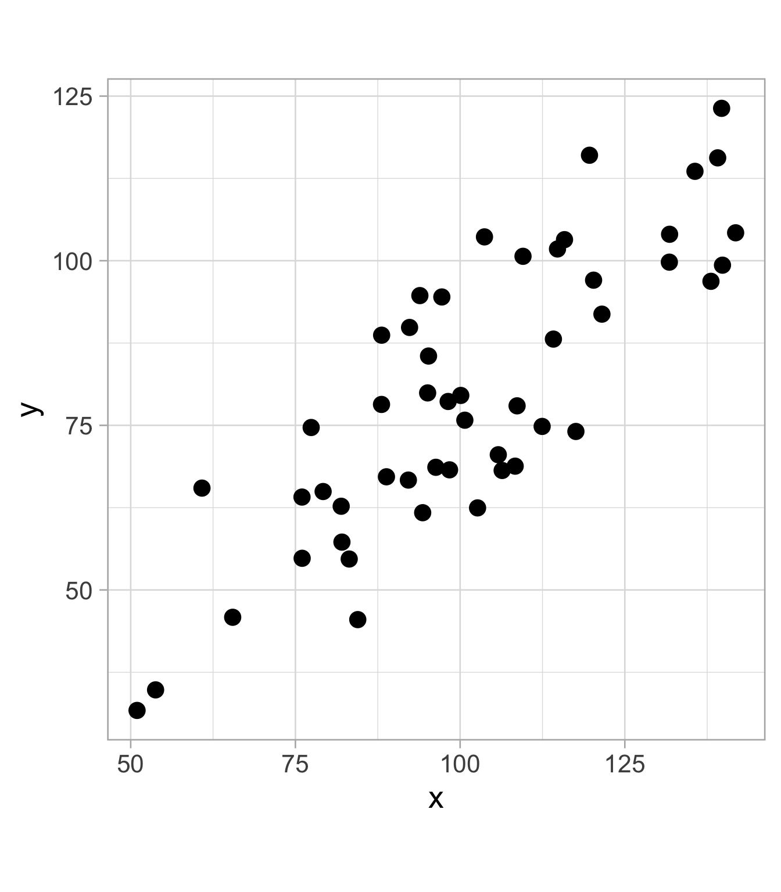
Supervised learning: linear regression
Background
Recap: supervised learning
Goal: uncover associations between a set of predictor (i.e, independent/explanatory) variables/features and a single response (i.e., dependent) variable
Prediction: Accurately predict unseen test cases
Inference: Understand which features affect the response (and how)
Simple linear regression
Assume a linear relationship between \(X\) and \(Y\):
\[ Y_{i}=\beta_{0}+\beta_{1} X_{i}+\epsilon_{i}, \quad \text { for } i=1,2, \dots, n, \]
where:
\(Y_i\) is the \(i\)th value for the response variable
\(X_i\) is the \(i\)th value for the predictor variable
and
\(\beta_0\) is an unknown, constant intercept: average value for \(Y\) if \(X = 0\) (be careful sometimes…)
\(\beta_1\) is an unknown, constant slope: change in average value for \(Y\) associated with a one-unit increase in \(X\)
\(\epsilon_i\) is the random noise: assume independent, identically distributed (iid) from a normal distribution
- That is, \(\displaystyle \epsilon_i \overset{iid}{\sim}N(0, \sigma^2)\) with constant variance \(\sigma^2\)
Simple linear regression estimation
We are estimating the conditional expectation (mean) for \(Y\) given \(X\):
\[\mathbb{E}[Y_i \mid X_i] = \beta_0 + \beta_1X_i\]
. . .
How do we estimate the best fitted line (i.e., how do we estimate \(\beta_0\) and \(\beta_1\))?
. . .
Ordinary least squares (OLS) - by minimizing the residual sum of squares (RSS)
\[\text{RSS} \left(\beta_{0}, \beta_{1}\right)=\sum_{i=1}^{n}\left[Y_{i}-\left(\beta_{0}+\beta_{1} X_{i}\right)\right]^{2}=\sum_{i=1}^{n}\left(Y_{i}-\beta_{0}-\beta_{1} X_{i}\right)^{2}\]
. . .
\[ \displaystyle \widehat{\beta}_{1}=\frac{\sum_{i=1}^{n}\left(X_{i}-\bar{X}\right)\left(Y_{i}-\bar{Y}\right)}{\sum_{i=1}^{n}\left(X_{i}-\bar{X}\right)^{2}} \quad \text{ and } \quad \widehat{\beta}_{0}=\bar{Y}-\widehat{\beta}_{1} \bar{X}, \]
where \(\displaystyle \bar{X} = \frac{1}{n}\sum_{i=1}^n X_i\) and \(\displaystyle \bar{Y} = \frac{1}{n}\sum_{i=1}^n Y_i\)
Visual explanation
Imagine a 2D scatterplot with different data points
Linear regression aims to find a “best fit” line that minimizes the vertical distance between the line and the data points
The vertical distance is known as a residual (difference between the actual y-value of a data point and the predicted y-value on the regression line)
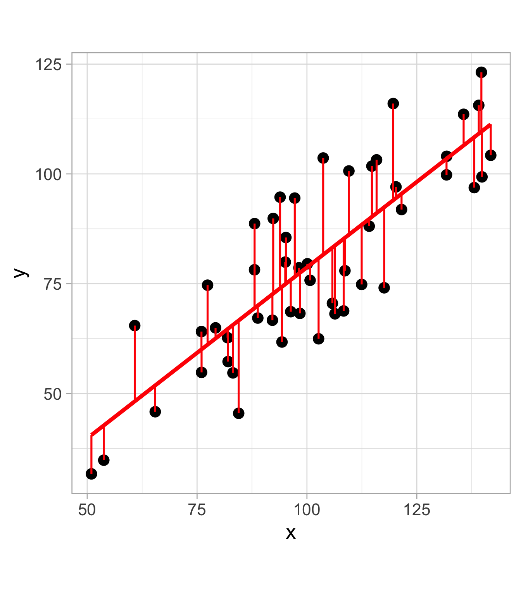
Linear regression in R
Example data: NFL teams summary
Dataset created from nflfastR, summarizing NFL team performances from 1999 to 2020
library(tidyverse)
theme_set(theme_light())
nfl_teams_data <- read_csv("http://www.stat.cmu.edu/cmsac/sure/2021/materials/data/regression_projects/nfl_team_season_summary.csv") # throwback using CMSACamp 2021/2022 data
glimpse(nfl_teams_data)Rows: 701
Columns: 55
$ season <dbl> 1999, 1999, 1999, 1999, 1999, 1999, 19…
$ team <chr> "ARI", "ATL", "BAL", "BUF", "CAR", "CH…
$ offense_completion_percentage <dbl> 0.4774624, 0.5036630, 0.4520796, 0.540…
$ offense_total_yards_gained_pass <dbl> 2796, 3317, 2805, 3275, 4144, 4090, 31…
$ offense_total_yards_gained_run <dbl> 1209, 1176, 1663, 2038, 1484, 1359, 19…
$ offense_ave_yards_gained_pass <dbl> 4.667780, 6.075092, 5.072333, 6.167608…
$ offense_ave_yards_gained_run <dbl> 3.148438, 3.195652, 4.126551, 4.125506…
$ offense_total_air_yards <dbl> 0, 0, 0, 0, 0, 0, 0, 0, 0, 0, 0, 0, 0,…
$ offense_ave_air_yards <dbl> NaN, NaN, NaN, NaN, NaN, NaN, NaN, NaN…
$ offense_total_yac <dbl> 0, 11, 0, 161, 89, 508, 0, 35, 0, 9, 1…
$ offense_ave_yac <dbl> NaN, 11.000000, NaN, 3.926829, 4.45000…
$ offense_n_plays_pass <dbl> 599, 546, 553, 531, 620, 711, 592, 546…
$ offense_n_plays_run <dbl> 384, 368, 403, 494, 346, 383, 426, 311…
$ offense_n_interceptions <dbl> 28, 18, 18, 14, 14, 20, 18, 14, 12, 18…
$ offense_n_fumbles_lost_pass <dbl> 4, 7, 9, 5, 7, 9, 5, 5, 3, 4, 2, 7, 6,…
$ offense_n_fumbles_lost_run <dbl> 5, 6, 2, 6, 7, 5, 3, 3, 7, 5, 4, 5, 5,…
$ offense_total_epa_pass <dbl> -121.973897, -27.666629, -97.077660, 2…
$ offense_total_epa_run <dbl> -71.171545, -78.883173, -35.461130, -4…
$ offense_ave_epa_pass <dbl> -0.203629210, -0.050671482, -0.1755473…
$ offense_ave_epa_run <dbl> -0.18534257, -0.21435645, -0.08799288,…
$ offense_total_wpa_pass <dbl> -3.5184215, -1.9364824, -2.4247775, -0…
$ offense_total_wpa_run <dbl> -2.2340416, -1.9415577, -1.5489192, -0…
$ offense_ave_wpa_pass <dbl> -0.0058738256, -0.0035466711, -0.00438…
$ offense_ave_wpa_run <dbl> -0.0058178167, -0.0052759719, -0.00384…
$ offense_success_rate_pass <dbl> 0.3589316, 0.4029304, 0.3435805, 0.431…
$ offense_success_rate_run <dbl> 0.3437500, 0.3288043, 0.3697270, 0.370…
$ defense_completion_percentage <dbl> 0.5572519, 0.5410822, 0.4949153, 0.497…
$ defense_total_yards_gained_pass <dbl> 3143, 3129, 2647, 2669, 3519, 3793, 37…
$ defense_total_yards_gained_run <dbl> 2258, 2057, 1112, 1342, 1871, 1833, 16…
$ defense_ave_yards_gained_pass <dbl> 5.998092, 6.270541, 4.486441, 4.951763…
$ defense_ave_yards_gained_run <dbl> 4.350674, 4.285417, 3.132394, 3.414758…
$ defense_total_air_yards <dbl> 0, 0, 0, 0, 0, 0, 0, 0, 0, 0, 0, 0, 0,…
$ defense_ave_air_yards <dbl> NaN, NaN, NaN, NaN, NaN, NaN, NaN, NaN…
$ defense_total_yac <dbl> 0, 0, 0, 182, 103, 404, 0, 8, 0, 0, 17…
$ defense_ave_yac <dbl> 0.000000, NaN, NaN, 5.055556, 6.058824…
$ defense_n_plays_pass <dbl> 524, 499, 590, 539, 588, 612, 553, 546…
$ defense_n_plays_run <dbl> 519, 480, 355, 393, 430, 416, 442, 584…
$ defense_n_interceptions <dbl> 17, 11, 19, 12, 15, 14, 12, 8, 23, 15,…
$ defense_n_fumbles_lost_pass <dbl> 5, 1, 4, 4, 8, 7, 4, 6, 3, 5, 8, 2, 6,…
$ defense_n_fumbles_lost_run <dbl> 3, 4, 1, 5, 1, 7, 8, 5, 5, 3, 7, 8, 5,…
$ defense_total_epa_pass <dbl> -8.645207, 25.421303, -101.968213, -82…
$ defense_total_epa_run <dbl> 4.927997, -22.014322, -61.295384, -70.…
$ defense_ave_epa_pass <dbl> -0.016498487, 0.050944496, -0.17282747…
$ defense_ave_epa_run <dbl> 0.009495177, -0.045863171, -0.17266305…
$ defense_total_wpa_pass <dbl> -2.31819156, -0.35453726, -1.72091652,…
$ defense_total_wpa_run <dbl> -0.2788802, -0.8169649, -2.1147486, -1…
$ defense_ave_wpa_pass <dbl> -0.0044240297, -0.0007104955, -0.00291…
$ defense_ave_wpa_run <dbl> -0.0005373414, -0.0017020102, -0.00595…
$ defense_success_rate_pass <dbl> 0.4217557, 0.4028056, 0.3576271, 0.352…
$ defense_success_rate_run <dbl> 0.4142582, 0.3812500, 0.3183099, 0.320…
$ points_scored <dbl> 245, 285, 324, 320, 421, 272, 283, 217…
$ points_allowed <dbl> 382, 380, 277, 229, 381, 341, 460, 437…
$ wins <dbl> 6, 5, 8, 11, 8, 6, 4, 2, 8, 6, 8, 8, 1…
$ losses <dbl> 10, 11, 8, 5, 8, 10, 12, 14, 8, 10, 8,…
$ ties <dbl> 0, 0, 0, 0, 0, 0, 0, 0, 0, 0, 0, 0, 0,…Modeling NFL score differential
Interested in modeling a team’s score differential
nfl_teams_data <- nfl_teams_data %>%
mutate(score_diff =
points_scored - points_allowed)
nfl_teams_data |>
ggplot(aes(x = score_diff)) +
geom_histogram(color = "black",
fill = "darkblue",
alpha = 0.3) +
labs(x = "Score differential", y = "Count")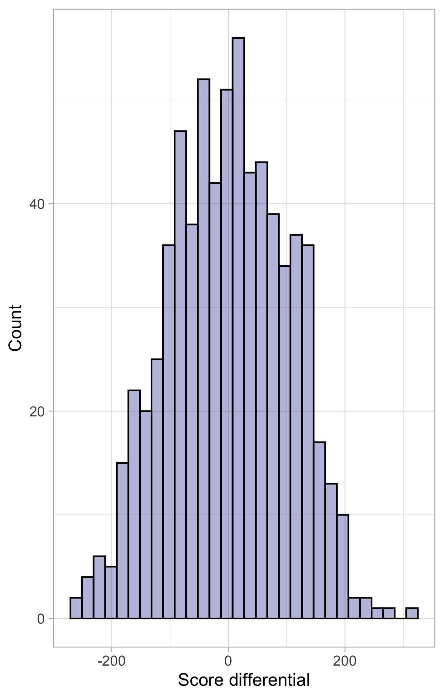
Relationship between score differential and passing performance
offense_ave_epa_pass is the team’s average expected points added (EPA) per pass attempt
nfl_teams_data |>
ggplot(aes(x = offense_ave_epa_pass,
y = score_diff)) +
geom_point(alpha = 0.5) +
labs(x = "EPA gained per pass attempt",
y = "Score differential")We fit linear regression models using lm(), formula is input as: response ~ predictor
simple_lm <- lm(score_diff ~ offense_ave_epa_pass, data = nfl_teams_data) 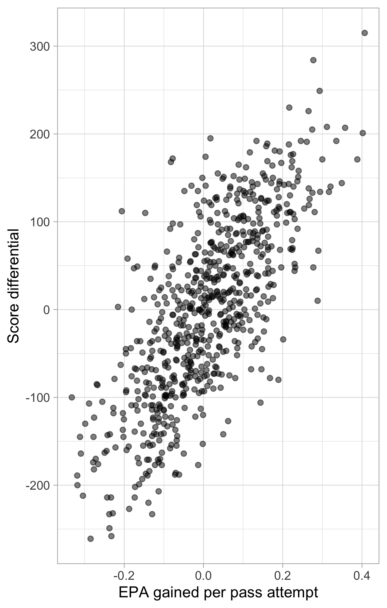
Model summary using summary()
summary(simple_lm)
Call:
lm(formula = score_diff ~ offense_ave_epa_pass, data = nfl_teams_data)
Residuals:
Min 1Q Median 3Q Max
-182.611 -46.600 -1.326 44.123 233.640
Coefficients:
Estimate Std. Error t value Pr(>|t|)
(Intercept) -4.890 2.561 -1.909 0.0566 .
offense_ave_epa_pass 566.352 19.226 29.458 <2e-16 ***
---
Signif. codes: 0 '***' 0.001 '**' 0.01 '*' 0.05 '.' 0.1 ' ' 1
Residual standard error: 67.67 on 699 degrees of freedom
Multiple R-squared: 0.5539, Adjusted R-squared: 0.5532
F-statistic: 867.8 on 1 and 699 DF, p-value: < 2.2e-16How do we read the summary() output?
Our model is: \(\displaystyle \text{Score differential} = \beta_0 + \beta_1 \cdot \ (\text{Passing performance}) + \epsilon\)
Under coefficients:
Estimateare the model coefficient estimates: \(\displaystyle \hat{\beta}_0 = -4.89\) and \(\hat{\beta}_1 = 566.35\)
. . .
Std. Erroris the standard errors for the coefficient estimates: \(\displaystyle \widehat{SE}(\hat{\beta}_0) = 2.56\) and \(\displaystyle \widehat{SE}(\hat{\beta}_1) = 19.22\)
. . .
t valueare the test statistics (using a t-test). For \(\beta_1\):
\[ t = \frac{\hat{\beta}_1}{\widehat{SE}(\hat{\beta}_1)} = \frac{566.352}{19.22} = 29.45 \]
This tests whether there is a linear relationship between the predictor and the response, \(H_0: \beta_1 = 0\) vs. \(H_1: \beta_1 \neq 0\).
Inference: hypothesis testing
- Under the null hypothesis, \(H_0: \beta_1 = 0\), our test statistic \(t\) follows a \(t\)-distribution
. . .
To fully characterize a \(t\)-distribution, we need the degrees of freedom
For linear regression, the degrees of freedom is \(n - (p + 1)\) (where \(n\) is the number of observations used to fit the model and \(p\) is the number of estimated coefficients beyond the intercept)
summary()tells us the degrees of freedom is \(699\) (as \(701 - 2 = 699\))
. . .
Pr(>|t|)is the p-value: probability of observing a value as extreme as the observed test statistic under the null hypothesis- \(p\)-value \(< \alpha = 0.05\) (conventional threshold): sufficient evidence to reject the null hypothesis that the coefficient is zero
. . .
In context: For NFL teams, there was a statistically significant association between passing performance, as measured through the team’s average expected points added (EPA) per pass attempt, and season score differential, \(\hat{\beta} = 566.35\), \(t(699) = 29.45\), \(p < 0.001\).
Inference: interpreting coefficients
Since offense_ave_epa_pass is a quantitative predictor, we can interpret it as follows:
For NFL teams, a one-unit increase in average expected points added (EPA) per pass attempt is associated with a 566.35 point increase in season score differential, on average (95% CI [528.60, 604.10]).
. . .
Always make sure to interpret important coefficients in context (and with units when possible)!
We can compute the \(95\%\) confidence interval (CI) by doing \(\hat{\beta}_1 \pm 1.96 \cdot \widehat{SE}(\hat{\beta}_1)\), or using the
confint()function:
confint(simple_lm) 2.5 % 97.5 %
(Intercept) -9.919107 0.138374
offense_ave_epa_pass 528.604817 604.100144Model summary using the broom package
glance(): summary metrics of a model fit
library(broom)
glance(simple_lm)# A tibble: 1 × 12
r.squared adj.r.squared sigma statistic p.value df logLik AIC BIC
<dbl> <dbl> <dbl> <dbl> <dbl> <dbl> <dbl> <dbl> <dbl>
1 0.554 0.553 67.7 868. 1.26e-124 1 -3948. 7902. 7916.
# ℹ 3 more variables: deviance <dbl>, df.residual <int>, nobs <int>tidy(): coefficients table in a tidy format
tidy(simple_lm)# A tibble: 2 × 5
term estimate std.error statistic p.value
<chr> <dbl> <dbl> <dbl> <dbl>
1 (Intercept) -4.89 2.56 -1.91 5.66e- 2
2 offense_ave_epa_pass 566. 19.2 29.5 1.26e-124Confidence interval for model coefficients
With tidy(), we can also obtain confidence intervals for each coefficient:
tidy(simple_lm, conf.int = TRUE, conf.level = 0.95)# A tibble: 2 × 7
term estimate std.error statistic p.value conf.low conf.high
<chr> <dbl> <dbl> <dbl> <dbl> <dbl> <dbl>
1 (Intercept) -4.89 2.56 -1.91 5.66e- 2 -9.92 0.138
2 offense_ave_epa_pass 566. 19.2 29.5 1.26e-124 529. 604. . . .
Another common interpretation of confidence intervals is the following (in context of offense_ave_epa_pass):
We’re 95% confident that a one-unit increase in average expected points added (EPA) per pass attempt is associated with an increase of between 529 and 604 points in the season score differential for NFL teams, on average.
Coefficient of determination
The coefficient of determination (\(R^2\)) estimates the proportion of the variance in \(Y\) that is explained by \(X\):
\[ \displaystyle R^2 = \frac{\text{var}(\hat{Y})}{\text{var}(Y)} \]
var(predict(simple_lm)) / var(nfl_teams_data$score_diff) [1] 0.5538537. . .
In linear regression, the square of the correlation coefficient is to be exactly the coefficient of determination (\(R^2\)):
cor(nfl_teams_data$offense_ave_epa_pass, nfl_teams_data$score_diff)^2[1] 0.553853755.4% of the variability in the season score differential can be explained by the linear relationship between season score differential and average expected points added (EPA) per pass attempt (the remaining 44.6% of the variation is due to other factors and/or noise).
Generating predictions
We can use the predict() or fitted() function to get the fitted values from the regression model
head(predict(simple_lm)) # also can input new data to predict() 1 2 3 4 5 6
-120.21628 -33.58829 -104.31202 21.15045 57.18906 -23.34489 head(fitted(simple_lm)) 1 2 3 4 5 6
-120.21628 -33.58829 -104.31202 21.15045 57.18906 -23.34489 Plot observed values against predictions
Useful diagnostic (for any type of model, not just linear regression!)
nfl_teams_data |>
mutate(pred = predict(simple_lm)) |>
ggplot(aes(x = pred, y = score_diff)) +
geom_point(alpha = 0.5, size = 1.5) +
geom_abline(slope = 1, intercept = 0,
linetype = "dashed",
color = "orangered",
linewidth = 2) A “perfect” model will follow diagonal
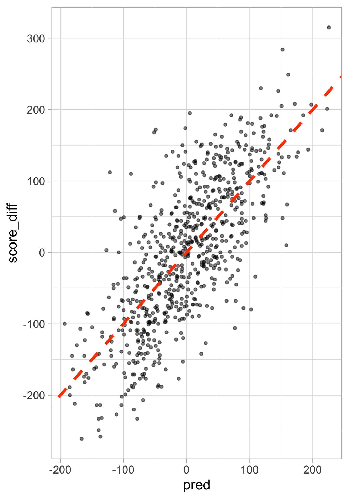
Plot observed values against predictions
Augment the data with model output using the broom package
nfl_teams_data <- simple_lm |>
augment(nfl_teams_data)
nfl_teams_data |>
ggplot(aes(x = .fitted, y = score_diff)) +
geom_point(alpha = 0.5, size = 1.5) +
geom_abline(slope = 1, intercept = 0, color = "orangered",
linetype = "dashed", linewidth = 2)augment() adds various columns from model fit we can use in plotting for model diagnostics
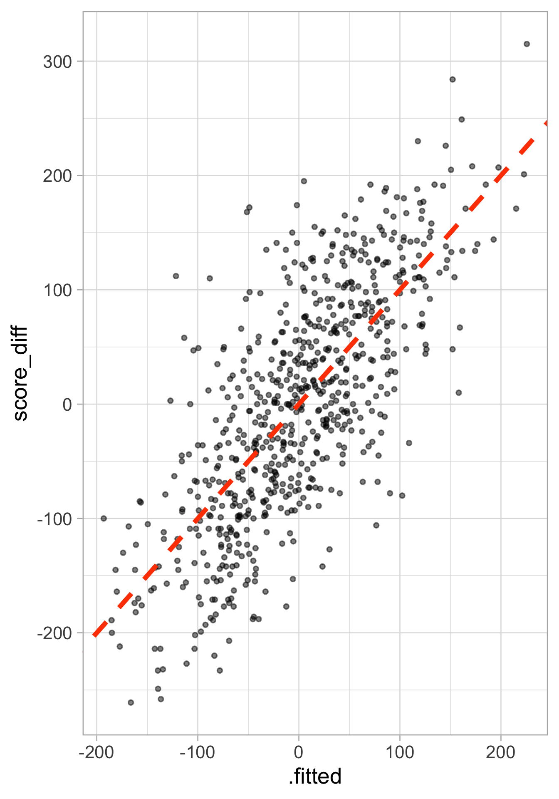
Assessing assumptions of linear regression
Recall that simple linear regression assumes that \(Y_i = \beta_0 + \beta_1 X_i + \epsilon_i\), with \(\epsilon_i \overset{iid}{\sim} N(0, \sigma^2)\).
. . .
Therefore, simple linear regression encodes four assumptions:
The errors have mean zero (linearity): \(\mathbb{E}[\epsilon \mid X] = 0\)
The error variance is constant (homoskedasticity): \(\text{var}(\epsilon \mid X) = \sigma^2\)
The errors are independent: \(\text{var}(\epsilon \mid X) = \sigma^2\) (can be violated in different ways than homoskedasticity)
The errors are normally distributed
. . .
We’ve also assumed that \(X\) is fixed, NOT random
For a helpful overview of regression assumptions and diagnostics, see Professor Alex Reinhart’s notes.
Plot residuals against fitted values
Recall, the residual is the difference between the observed and fitted (predicted) values:
\[ \hat{\epsilon}_i = Y_i - \hat{Y}_i \]
We can test several of the linear regression assumptions using the residuals
. . .
In particular using a residuals vs fitted values plot, we can:
Assess linearity assumption: conditional the fitted values, do the residuals have mean zero?
Assess equal variance: across the fitted values, do the residuals have constant variance (\(\sigma^2\))?
. . .
Note: it is more difficult to assess the error independence and fixed \(X\) assumptions. Ideally, these assumptions should be based on subject-matter knowledge
Plot residuals against predicted values
nfl_teams_data |>
ggplot(aes(x = .fitted, y = .resid)) +
geom_point(alpha = 0.5, size = 1.5) +
geom_hline(yintercept = 0, linetype = "dashed",
color = "orangered", linewidth = 2) +
# plot the residual mean
geom_smooth(se = TRUE, fill = "skyblue2")Two things to look for:
Any trend around horizontal reference line? Violates linearity (may have to additional covariates, polynomial terms, splines, etc.)
Unequal vertical spread? Violates homoskedasticity (consider using the sandwich estimator)
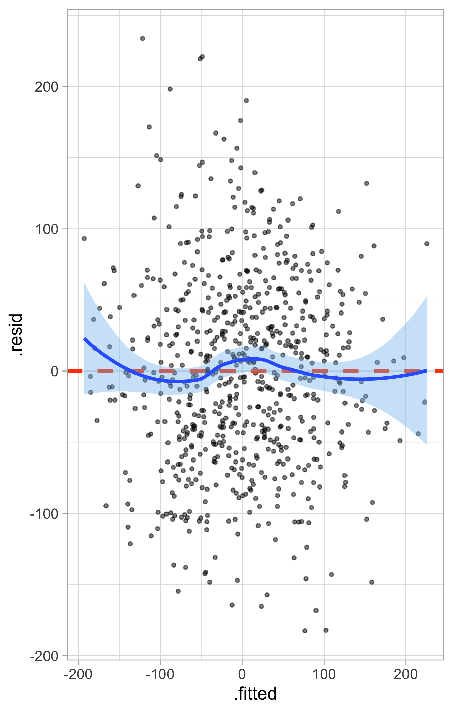
What about the normality assumption?
OLS doesn’t care about this assumption, it’s just estimating coefficients!
BUT in terms of inference, a violation of the normality of errors assumption:
May result in incorrect inferences in small samples
Usually does not have a big impact on inferences in larger samples (Weisberg 2014)
We can detect whether the errors are (roughly) normally distributed by Q-Q plot on the standardized residuals, which are the residuals divided by their estimated standard deviation
\[ \displaystyle \hat{\epsilon}_{\text{standardized}} = \frac{\hat{\epsilon}}{\hat{\sigma}} \]
nfl_teams_data |>
ggplot(aes(sample = .std.resid)) +
geom_qq_line(distribution = stats::qnorm) +
geom_qq(distribution = stats::qnorm) 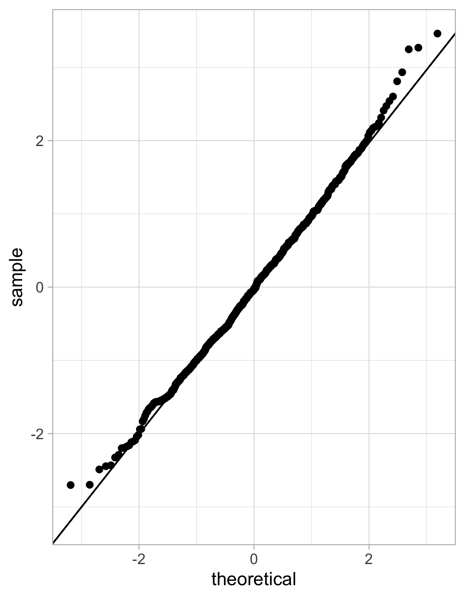
Linear regression with one categorical predictor
In this example, we look at three teams: Chicago Bears, Pittsburgh Steelers, and Seattle Seahawks
. . .
We change the estimate and interpretation intercept of our regression line when we include a categorical variable (one level of the variable is “absorbed” into the itercept term)
Notice we only get two coefficients for the season besides the intercept: (i)
teamPITand (ii)teamSEA
nfl_teams_subset <- nfl_teams_data |>
filter(team %in% c("PIT", "SEA", "CHI"))
team_lm <- lm(score_diff ~ team, data = nfl_teams_subset)
tidy(team_lm, conf.int = TRUE)# A tibble: 3 × 7
term estimate std.error statistic p.value conf.low conf.high
<chr> <dbl> <dbl> <dbl> <dbl> <dbl> <dbl>
1 (Intercept) -11.6 17.0 -0.681 0.498 -45.6 22.4
2 teamPIT 83.2 24.1 3.46 0.000989 35.1 131.
3 teamSEA 51.7 24.1 2.15 0.0357 3.57 99.8Linear regression with one categorical predictor
By default, R turns the categorical variables of \(m\) levels (e.g. three teams) into \(m-1\) indicator/binary variables for different categories relative to the baseline/reference level
Indicator/binary variables are one if it is that level, and zero otherwise
By default,
Ruses alphabetical order to determine the reference level (teamCHIin this case)
. . .
With our categorical predictor of team, our linear model is:
\[\widehat{\text{Score differential}} = -11.59 + 83.18 \ I_{\texttt{teamPIT}} + 51.68\ I_{\texttt{teamSEA}}\]
Linear regression with one categorical predictor
\[\widehat{\text{Score differential}} = -11.59 + 83.18 \ I_{\texttt{teamPIT}} + 51.68\ I_{\texttt{teamSEA}}\]
The intercept term gives us the (baseline) average y for the reference level
- In our context: the expected season score differential for the Chicago Bears is \(-11.59\) points (95% CI [\(-45.61\), \(22.43\)])
. . .
The coefficient estimates indicate the expected change in the response variable relative to the reference level
- For example: the season score differential for the Pittsburgh Steelers is \(83.18\) points higher (95% CI [\(35.07\), \(131.29\)]) than than the season score differential for the Chicago Bears
Comparing observed values and predictions
Similar to before, we can plot the actual and predicted ridership
To reiterate, all we’re doing is changing the intercept of our regression line by including a categorical variable
nfl_teams_subset |>
mutate(team_pred = predict(team_lm)) |>
ggplot(aes(x = score_diff, y = team_pred)) +
geom_point(size = 1.5, alpha = 0.5) +
facet_wrap(~ team, ncol = 3) +
labs(x = "Actual score differential",
y = "Predicted score differential")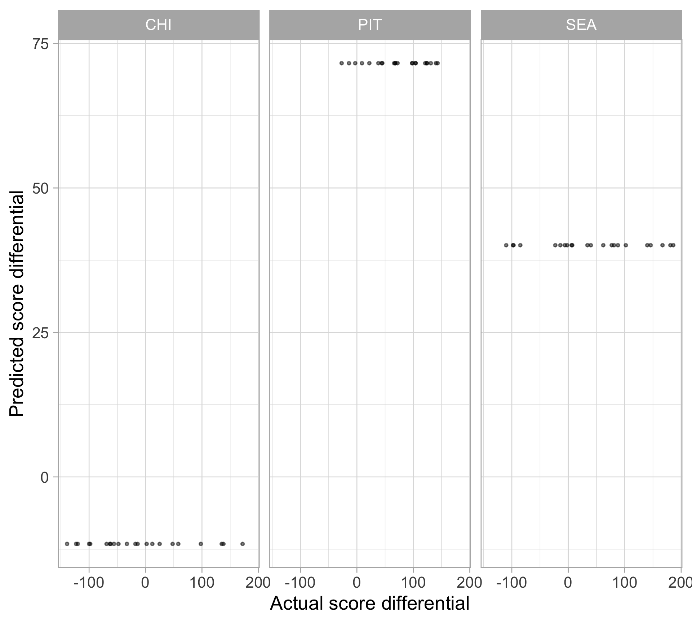
Interactions
An interaction allows one predictor’s association with the outcome to depend on the value of another predictor
. . .
Example: an interaction between team and offense_ave_epa_pass says that the association between passing performance and season score differential depends on the NFL team
. . .
In general, if we have a categorical and quantitative variables: we include an interaction term when believe associations between the quantitative variable and the response differ by category
. . .
This means those regression lines have different intercepts as well as different slopes
Visualizing interactions
nfl_teams_subset |>
ggplot(aes(x = offense_ave_epa_pass, y = score_diff, color = team)) +
geom_point(size = 2, alpha = 0.6) +
geom_smooth(method = "lm", se = FALSE, linewidth = 2) +
ggthemes::scale_color_colorblind()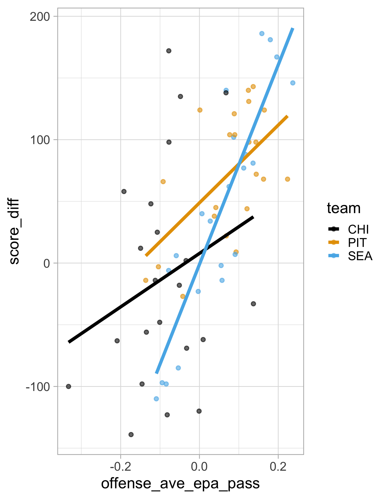
Interpreting interactions
interaction_lm <- lm(score_diff ~ offense_ave_epa_pass * team,
data = nfl_teams_subset)
tidy(interaction_lm)# A tibble: 6 × 5
term estimate std.error statistic p.value
<chr> <dbl> <dbl> <dbl> <dbl>
1 (Intercept) 7.82 18.2 0.431 0.668
2 offense_ave_epa_pass 217. 138. 1.57 0.121
3 teamPIT 41.0 24.8 1.65 0.104
4 teamSEA -8.91 23.5 -0.379 0.706
5 offense_ave_epa_pass:teamPIT 98.3 199. 0.493 0.624
6 offense_ave_epa_pass:teamSEA 592. 193. 3.07 0.00326\[ \begin{aligned} {\text{Score differential}} = \beta_0 &+ \beta_1 \ \text{Pass performance} + \beta_2 \ I_{\texttt{teamPIT}} + \beta_3 \ I_{\texttt{teamSEA}} \\ &+ \beta_4 \{ \text{Pass performance} \times I_{\texttt{teamPIT}} \} + \beta_5 \{ \text{Pass performance} \times I_{\texttt{teamSEA}} \} + \epsilon \\ \end{aligned} \]
. . .
Example interpretation (comparing the Pittsburgh Steelers to the Chicago Bears):
For the Chicago Bears, a one-unit increase in average expected points added (EPA) per pass attempt is associated with an increase of 216.70 points in season score differential, on average. But for the Pittsburgh Steelers, a one-unit increase in average expected points added (EPA) per pass attempt is associated with an increase of 216.70 + 98.28 = 314.98 points in season score differential, on average.
Multiple linear regression
We can include as many variables as we want (assuming that \(n > p\)):
\[Y=\beta_{0}+\beta_{1} X_{1}+\beta_{2} X_{2}+\cdots+\beta_{p} X_{p}+\epsilon\]
OLS estimates, \(\hat{\boldsymbol{\beta}} = (\hat{\beta}_{0}, \dots, \hat{\beta}_{p})'\) in matrix notation (\(\boldsymbol{X}\) is a \(n \times p\) matrix):
\[\hat{\boldsymbol{\beta}} = (\boldsymbol{X} ^T \boldsymbol{X})^{-1}\boldsymbol{X}^T\boldsymbol{Y}\]
. . .
We can just add more variables to the formula in R:
multiple_lm <- lm(score_diff ~ offense_ave_epa_pass + defense_ave_epa_pass, data = nfl_teams_subset)
tidy(multiple_lm)# A tibble: 3 × 5
term estimate std.error statistic p.value
<chr> <dbl> <dbl> <dbl> <dbl>
1 (Intercept) 12.3 4.97 2.47 1.62e- 2
2 offense_ave_epa_pass 443. 39.6 11.2 1.36e-16
3 defense_ave_epa_pass -584. 52.0 -11.2 1.12e-16Multiple linear regression
Use adjusted \(R^2\) when including multiple variables:
\[ \displaystyle R^2_{\text{adj}} = 1 - \frac{(1 - R^2)(n - 1)}{(n - p - 1)} \]
Adjusts for the number of regressors in the model (\(p\))
Adding more variables will always increase the model’s (unadjusted) \(R^2\)
. . .
glance(multiple_lm) # notice the diff. between unadj. and adj. R-squared# A tibble: 1 × 12
r.squared adj.r.squared sigma statistic p.value df logLik AIC BIC
<dbl> <dbl> <dbl> <dbl> <dbl> <dbl> <dbl> <dbl> <dbl>
1 0.805 0.798 38.6 130. 4.61e-23 2 -333. 674. 683.
# ℹ 3 more variables: deviance <dbl>, df.residual <int>, nobs <int>Also, recall Anscombe’s quartet and the Datasaurus dozen. In general, you should be cautious of any single number summary of an elusive concept like model “goodness”.
Regression confidence intervals vs prediction intervals
These answer different questions:
Do we want to predict the mean response for a particular value \(x^*\) of the explanatory variable? Confidence interval
Do we want to predict the response for an individual case? Prediction interval
. . .
Examples:
If we would like to know the average score differential for all NFL team-seasons with an average expected points added (EPA) per pass attempt of \(0.10\), then we would use an interval for the mean response
If we want an intervalto contain the score differential a particular NFL team-season with with an average expected points added (EPA) per pass attempt of \(0.10\), then we need the interval for a single prediction
Regression confidence intervals
The layer geom_smooth() displays confidence intervals for the regression line
# predict(simple_lm, interval = "confidence")
lm_plot <- nfl_teams_subset |>
ggplot(aes(x = offense_ave_epa_pass, y = score_diff)) +
geom_point(alpha = 0.5) +
geom_smooth(method = "lm")
lm_plot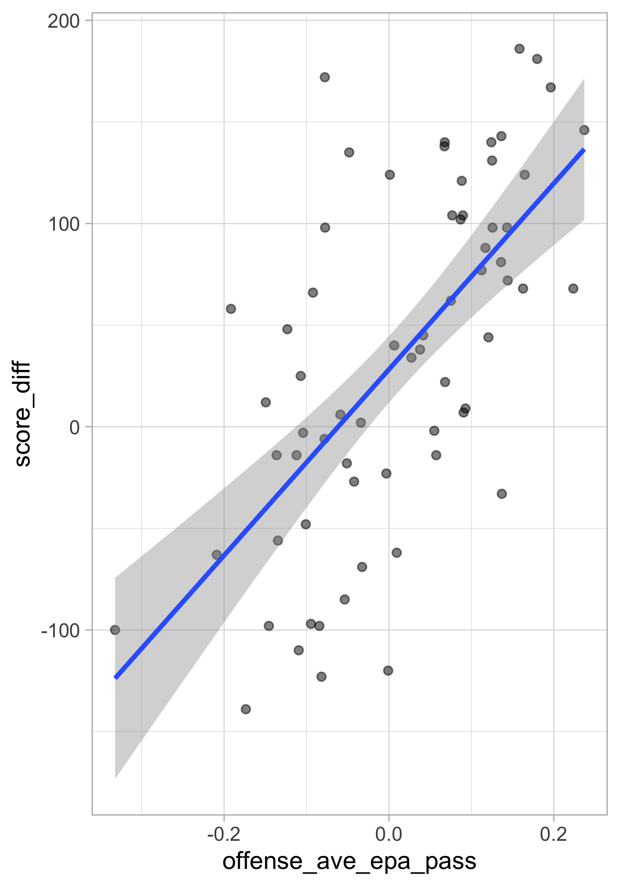
Regression confidence intervals
Interval estimate for the MEAN response at a given observation (i.e. for the predicted AVERAGE \(\hat{\beta}_0 + \hat{\beta}_1 x^*\))
. . .
Based on standard errors for the estimated regression line at \(x^*\), we get that:
\[ SE_{\text{line}}\left(x^{*}\right)=\hat{\sigma} \cdot \sqrt{\frac{1}{n}+\frac{\left(x^{*}-\bar{x}\right)^{2}}{\sum_{i=1}^{n}\left(x_{i}-\bar{x}\right)^{2}}} \]
. . .
Variation only comes from uncertainty in the parameter
Regression prediction intervals
Interval estimate for an INDIVIDUAL response at a given (new) observation
. . .
Must add the variance \(\sigma^2\) of a single predicted value:
\[ SE_{\text{pred}}\left(x^{*}\right)=\hat{\sigma} \cdot \sqrt{1 + \frac{1}{n}+\frac{\left(x^{*}-\bar{x}\right)^{2}}{\sum_{i=1}^{n}\left(x_{i}-\bar{x}\right)^{2}}} \]
. . .
Now, the variation comes from uncertainty in parameter estimates AND error variance
Confidence intervals versus prediction intervals
The standard error for predicting an individual response will always be larger than for predicting a mean response
Prediction intervals will always be wider than confidence intervals
# predict(simple_lm, interval = "prediction")
lm_plot +
geom_ribbon(
data = augment(simple_lm, interval = "prediction"),
aes(ymin = .lower, ymax = .upper),
color = "red", fill = NA
)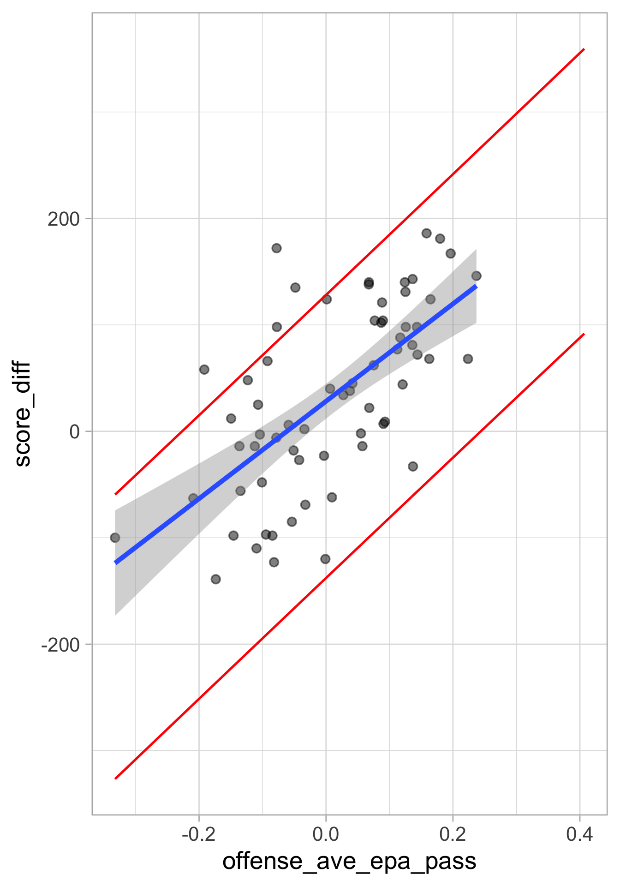